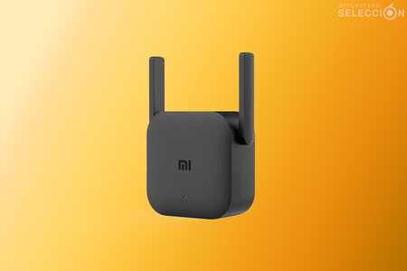

REPEATER (Repetidor)
¿Qué es un repetidor? ¿Cuál es su función?
Los repetidores realmente, solo están interesados por los bits, no se ocupan de segmentos, ni de paquetes ni de tramas; solo le interesa saber cómo se representa un uno o un cero para poder regenerarlo. Por eso se dice que un repetidor funciona a nivel físico. Son como los Hnos. listos del concentrador que hacen en realidad lo mismo, pero con más eficiencia.

Funciones del Repetidor:
Se emplean para conectar dos o más segmentos de Ethernet de cualquier tipo de medio físico. Los repetidores proporcionan la amplificación y re-sincronización de las señales necesarias para conectar los segmentos. Los repetidores también monitorizan todos los segmentos conectados para verificar que la red funciona correctamente.
Consideraciones en el uso de un Repetidor.
Las especificaciones IEEE 802.3 describen las reglas para el número máximo de repetidores que pueden ser usados en una configuración. Cuando se usan repetidores, simplemente se extiende la red a un tamaño mayor.
La desventaja que esto último produce es que el ancho de banda va disminuyendo cada vez más.